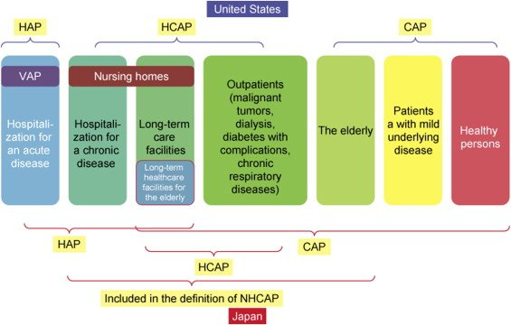
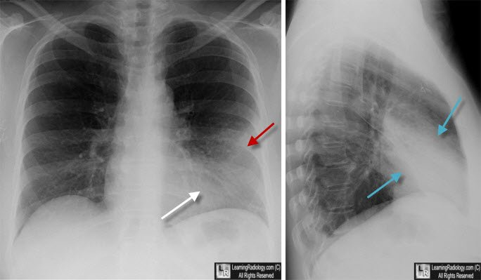
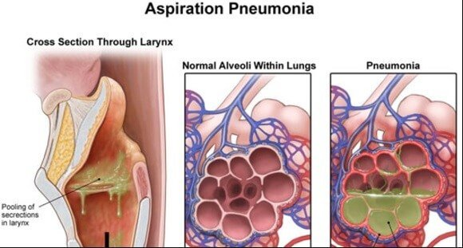

Week 2
Pneumonia
Pneumonia Basics & Risk Factors
Pneumonia is an infection in the lower respiratory tract — the pathogen has gotten past the upper airway's defenses (cilia, mucus, the cough reflex) and set up below them. It can be bacterial, viral, fungal, protozoal, or parasitic. It's transmitted by inhaled infectious droplets. It's more common in winter (often flu-related) and in males, and accounts for tens of thousands of deaths and millions of cases a year in the U.S. — numbers that spiked further during COVID.
Risk Factors
- Age extremes — children under 5 and adults over 70–80.
- Compromised immunity — long-term steroid therapy, organ transplant, HIV.
- Underlying lung disease — COPD, pulmonary hypertension.
- Alcohol use — the risk here is from aspiration, not a liver effect.
- Altered level of consciousness or impaired swallowing — both raise aspiration risk.
- Nursing home residency and immobility.
- Hospitalization, especially with endotracheal intubation.
- Thoracic or abdominal surgery, or anesthesia.
- Influenza — the single most common overall cause of pneumonia.
- Smoking — impairs ciliary clearance, a risk factor for every respiratory condition.
Classification — CAP, HAP, VAP & HCAP
| Term | Detail |
|---|---|
| CAP | Community-acquired pneumonia — develops outside the hospital. One of the most common reasons for hospitalization, and generally easier to treat than HAP. |
| HAP | Hospital-acquired pneumonia — develops 48+ hours after hospital admission. Worse outcomes than CAP, often associated with ICU care. |
| VAP | Ventilator-associated pneumonia — a subtype of HAP in intubated patients. More virulent, more contagious, and more deadly. |
| HCAP | Healthcare-associated pneumonia — technically grouped with CAP. Occurs in patients with frequent healthcare contact (nursing home residents, chronic hospitalizations, dialysis or chemo patients) without being truly hospital-acquired. |

How Pneumonia Develops & Presents
Pneumonia Pathophysiology, Step by Step
- A pathogen reaches the lower airway — most commonly through aspiration of oropharyngeal secretions, or through inhaled droplets from someone else's cough.
- This triggers an inflammatory reaction and pulmonary vasodilation.
- Infection spreads into the alveoli; goblet cells are stimulated and secrete mucus.
- Mucus accumulates between the alveoli and pulmonary capillaries, so the alveoli can't open and close properly.
- Gas exchange becomes impaired, ciliary clearance fails, and the immune system activates.
| Term | Detail |
|---|---|
| Often Preceded By | An upper respiratory infection. |
| Common Symptoms | Fever, chills, cough (productive or dry, depending on cause), malaise, pleuritic chest pain (more pain with breathing). |
| Severe Symptoms | Dyspnea, hemoptysis. |
| Bacterial Cough | Typically productive and purulent — sputum may be green, rusty-colored, or described as "currant jelly." |
| Viral Cough | Typically non-productive and scant. |
Diagnosis
| Term | Detail |
|---|---|
| Physical Assessment | Cough, fever, chills, wet/rhonchorous breath sounds, pleuritic chest pain, dyspnea, exercise intolerance. Over a consolidated area, expect dullness to percussion (normally resonant), inspiratory crackles, increased tactile fremitus, and egophony. |
| Chest X-Ray | Shows an infiltrate or area of consolidation. |
| CBC | An elevated white blood cell count suggests a bacterial cause. |
| Sputum Culture & Sensitivity | The gold standard — identifies the specific pathogen and which antibiotics will work against it. |

Bacterial & Aspiration Pneumonia
| Term | Detail |
|---|---|
| Staphylococcus aureus | Gram-positive; usually enters via the bloodstream/IV route. The most common gram-positive cause of hospital-acquired pneumonia, often as MRSA. |
| Streptococcus pneumoniae | Gram-positive; the most common organism in bacterial community-acquired pneumonia ("pneumococcal pneumonia"). Sputum is often brown or rusty-tinged. |
| Gram-Negative Organisms | Pseudomonas, Acinetobacter, Klebsiella pneumoniae — tend to cause more severe illness and are harder to treat. Often linked to central-line infections or IV drug use, and associated with hospital-acquired pneumonia. |
Aspiration Pneumonia
- Aspirated GI contents trigger an inflammatory reaction; the severity depends on the pH of the aspirate — more acidic content causes a worse inflammatory response.
- One way to help prevent severe aspiration pneumonia is a PPI, which lowers gastric acidity.
- Risk factors: altered level of consciousness, alcohol use, immobility, NG tubes, decreased gag reflex, decreased gastric emptying.
- Aspiration can be silent — a cough isn't required. High-risk patients need careful feeding observation and may need a dysphagia evaluation.

Viral & Atypical Pneumonia
| Term | Detail |
|---|---|
| Viral Pneumonia | Influenza is the most common cause overall and the most common cause of CAP; other viruses include adenovirus, RSV, and parainfluenza. Viruses impair the lungs' immune defenses, raising the risk of a secondary bacterial pneumonia. Symptoms match bacterial pneumonia. Treatment is supportive (antipyretics, decongestants, mucolytics) — antibiotics are avoided unless a bacterial infection is confirmed. Healthy patients generally recover in 2–3 weeks; hospitalization may be needed at age extremes or with immunocompromise. |
| Type | Detail |
|---|---|
| Pneumocystis Pneumonia (PCP) | A yeast-like fungus; associated with immunosuppression, most common in HIV. |
| Mycoplasma pneumoniae | "Walking pneumonia" — mild, with a persistent cough, headache, and earache. Has properties of both bacteria and viruses. |
| Legionella (Legionnaires' Disease) | Gram-negative; spread through water systems — old air conditioners, misted produce, hot tubs. Can be very deadly. |
| Aspergillus | Fungal; comes from old building walls, construction sites, stored grains, dead leaves, or compost. Can be severe, especially in immunocompromised patients. |
Treatment & Prevention
Bacterial pneumonia is treated with antibiotics. Viral pneumonia gets supportive care unless a secondary bacterial infection develops. General supportive measures for any pneumonia: adequate ventilation and oxygenation, hydration, good pulmonary hygiene, and nebulizer treatments as needed.
| Vaccine | Detail |
|---|---|
| PCV13 | Protects against 13 strains of pneumococcal pneumonia. |
| PPSV23 | Covers an additional 23 types. |
Both are generally given to elderly and immunocompromised patients.
Self-Test Flashcards
Click a card to flip it and check your answer.